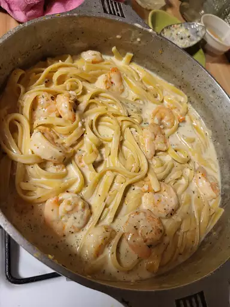

Creamy Garlic Pasta

Creamy Garlic Pasta is a simple pasta recipe that anyone can make and enjoy really quick.
Even if you have no cooking experience this is a great recipe to learn to cook with.
Ingridients
- 2 teaspoons of olive oil
- 4 garlic cloves, minced
- 2 tablespoons of butter
- 3 cups of chicken broth, or more as needed
- 0.5 teaspoon ground black pepper
- 0.25 teapsoon salt
- 0.5 pound spaghetti
- 1 cup gated Parmesan cheese
- 0.75 cup heavy cream
- 1.5 tablespoons dried parsley
Steps
- Heat olive oil in a medium pan over medium heat. Add garlic and stir until fragrant, 1 to 2 minutes. Add butter and stir constantly until melted. Pour in 3 cups chicken broth; add pepper and salt. Bring to a boil.
- Add spaghetti and cook, stirring occasionally, until tender yet firm to the bite, about 12 minutes. Add more chicken broth if pasta starts to stick to the pan.
- Add Parmesan cheese, cream, and parsley and mix until thoroughly combined. Serve immediately.